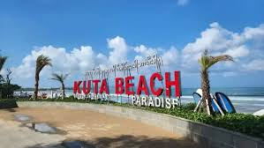
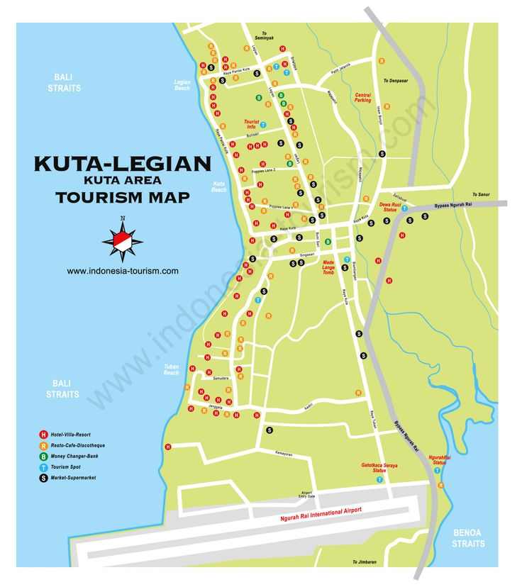

Website Promosi Wisata Indonesia |
||
|---|---|---|
|  | ||
Menu Navigasi |
Pantai Kuta, BaliPantai Kuta merupakan salah satu destinasi wisata paling terkenal di Indonesia. Terletak di Bali bagian selatan, pantai ini dikenal dengan pasir putihnya yang indah, ombak yang cocok untuk berselancar, serta pemandangan matahari terbenam yang memukau. Selain keindahan alamnya, Pantai Kuta juga menawarkan berbagai fasilitas wisata modern seperti hotel, restoran, dan tempat hiburan malam. Wisatawan lokal maupun mancanegara menjadikan Kuta sebagai destinasi wajib saat berlibur ke Pulau Bali. Video PromosiMusik Latar |
InformasiLokasi: Kuta, Badung, Bali Tiket Masuk: Gratis Jam Operasional: 06.00 - 18.00 WITA  |
| © 2025 Wisata Indonesia | Desain oleh Arya Saputra | ||